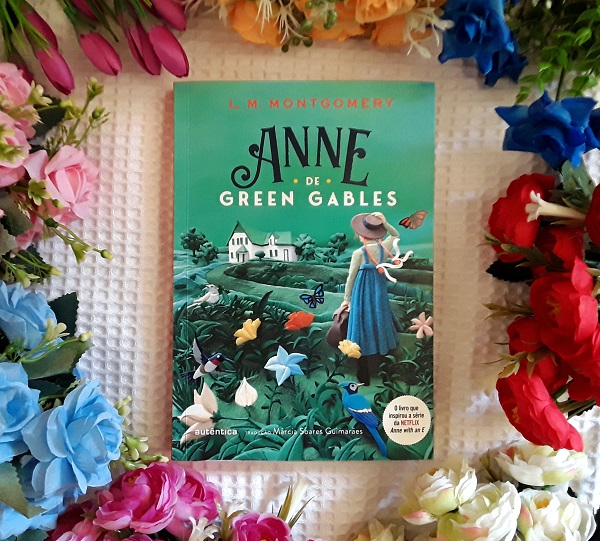

Resenha sobre Anne De Green Gables
Quando os irmãos Marilla e Matthew Cuthbert, de Green Gables, na Prince Edward Island, no Canadá, decidem adotar um órfão para ajudá-los nos trabalhos da fazenda, não estão preparados para o “erro” que mudará suas vidas: Anne Shirley, uma menina ruiva de 11 anos, acaba sendo enviada, por engano, pelo orfanato.
Apesar do acontecimento inesperado, a natureza expansiva, sempre de bem com a vida, a curiosidade, a imaginação peculiar e a tagarelice da menina conquistam rapidamente os relutantes pais adotivos. O espírito combativo e questionador de Anne logo atrai o interesse das pessoas do lugar – e muitos problemas também.
Resenha sobre O Verão Que Mudou A Minha Vida
Sempre que chegam as férias de verão, Isabel Conklin deixa para trás sua vida monótona na cidade e vai com a família para Cousins Beach. A casa de praia é seu segundo lar, e é lá que Belly reencontra as pessoas que mais ama: a melhor amiga de sua mãe, Susannah, e os filhos dela, Conrad e Jeremiah.
Ano após ano, ela tenta se aproximar de Conrad, mas nunca dá certo. Parece que o garoto nunca vai corresponder aos sentimentos de Belly. Dessa vez, no entanto, ela percebe algo diferente: Jeremiah passou a enxergá-la com outros olhos, e os dois estão cada vez mais próximos. Belly mudou. E esse verão tem tudo para ser o melhor de sua vida.